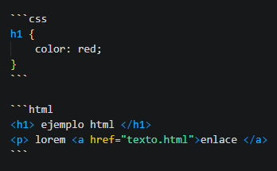

Indice
- Indice
- 1. Citas
- 1.1. Listas
- 1.2. Enlaces
- 1.3. Imágenes
- 1.4. Código y bloques de código
- 1.5. Separadores
- 1.6. Emoticones
- 2. Tablas
- 2.1 Listas de tareas
- 2.2. Referencias con sus secciones
1. Citas
Li Europan lingues es membres del sam familie. Lor separat existentie es un myth. Por scientie, musica, sport etc, litot
Li Europan lingues es membres del sam familie. Lor separat existentie es un myth. Por scientie, musica, sport etc, litot
> **Li Europan lingues es membres del sam familie. Lor separat existentie es un myth. Por scientie, musica, sport etc, litot**
>
> *Li Europan lingues es membres del sam familie. Lor separat existentie es un
myth. Por scientie, musica, sport etc, litot*
1.1. Listas
- Elemento 01
- sublista 01
- sublista 01-1
- sublista 01-2
- sublista 02
- sublista 01
- Elemento 02
-
Elemento 03
-
item 01
- item 02
- item03
* Elemento 01
* sublista 01
1. sublista 01-1
1. sublista 01-2
* sublista 02
* Elemento 02
* Elemento 03
1. **item 01**
1. *item 02*
2. *item03*
1.2. Enlaces
* [Universidad de Cádiz](http://www.uca.es)
* [Universidad de Córdoba](http://www.uco.es)
* <http://www.google.es>
1.3. Imágenes

1.4. Código y bloques de código
Li Europan lingues es var x = document.querySelector("img") membres del sam familie. Lor separat existentie es un my
h1 {
color: red;
}
<h1> ejemplo html </h1>
<p> lorem <a href="texto.html">enlace </a>
let x = document.querySelector("img")
Li Europan lingues es `var x = document.querySelector("img")` membres del sam familie. Lor separat existentie es un my

~~~javascript
let x = document.querySelector("img")
~~~
1.5. Separadores
lorem
----
ipsum
lorem
----
----
ipsum
-----
1.6. Emoticones
Li Europan ling :smile:, ues es var x = document.querySelector("img") membres del sam :turtule:. familie. Lor separat existentie es un
Li Europan ling :smile:, ues es `var x = document.querySelector("img")` membres del sam :turtule:. familie. Lor separat existentie es un
2. Tablas
| Cabecera 1 | Cabecera 2 | Cabecera 3 |
|---|---|---|
| Elem 1, 1 | Elem 1, 2 | Elem 1, 3 |
| Elem 2, 1 | Elem 2, 2 | Elem 2, 3 |
| Elem 3, 1 | Elem 3, 2 | Elem 3, 3 |
| Elem 4, 1 | Elem 4, 2 | Elem 4, 3 |
| Elem 5, 1 | Elem 5, 2 | Elem 5, 3 |
| Cabecera 1 | Cabecera 2 | Cabecera 3 |
| ---------- | ---------- | ---------- |
| Elem 1, 1 | Elem 1, 2 | Elem 1, 3 |
| Elem 2, 1 | Elem 2, 2 | Elem 2, 3 |
| Elem 3, 1 | Elem 3, 2 | Elem 3, 3 |
| Elem 4, 1 | Elem 4, 2 | Elem 4, 3 |
| Elem 5, 1 | Elem 5, 2 | Elem 5, 3 |
2.1 Listas de tareas
- [ ] tarea número 01
- [x] tarea número 02
- [ ] tarea número 03
- [ ] tarea número 01
- [x] tarea número 02
- [ ] tarea número 03
2.2. Referencias con sus secciones
- Aprende a programar con PHP
- Aprende a programar con JavaScript
- Aprende a programar con Python
* Aprende a [programar con PHP] [1]
* Aprende a [programar con JavaScript] [2]
* Aprende a [programar con Python] [3]
[1]: https://neoguias.com/php "Programa con PHP"
[2]: https://neoguias.com/javascript 'Programa con JavaScript'
[3]: https://neoguias.com/python (Programa con Python)